library("nfidd")Warning: replacing previous import 'bayesplot::rhat' by 'posterior::rhat' when
loading 'nfidd'library("dplyr")
library("tidyr")
library("ggplot2")
library("here")
library("cmdstanr")
library("tidybayes")
library("scoringutils")We can classify models along a spectrum by how much they include an understanding of underlying processes, or mechanisms; or whether they emphasise drawing from the data using a statistical approach. In this session, we’ll start with the renewal model that we’ve been using and explore adding both more mechanistic structure and then more statistical structure to the model. We’ll again evaluate these models to see what effect these different approaches might have.
The aim of this session is to introduce some common forecasting models and to evaluate them.
The source file of this session is located at sessions/forecasting-models.qmd.
In this session we will use the nfidd package to load the data set of infection times, the dplyr and tidyr packages for data wrangling, ggplot2 library for plotting, the here library to find the stan model, and the cmdstanr library for using stan. We will also use the tidybayes package for extracting results of the inference.
Warning: replacing previous import 'bayesplot::rhat' by 'posterior::rhat' when
loading 'nfidd'The best way to interact with the material is via the Visual Editor of RStudio. If not using the Visual Editor please remember that the code in the session needs to be run inside the course repository so that the here() commands below find the stan model files.
We set a random seed for reproducibility. Setting this ensures that you should get exactly the same results on your computer as we do. We also set an option that makes cmstanr show line numbers when printing model code. This is not strictly necessary but will help us talk about the models.
A large part of this course has been about showing the importance of understanding and modelling the underlying mechanisms of the data generating process. However, in many forecasting scenarios, we may not have a good understanding of the underlying mechanisms, or the data may be too noisy to make accurate predictions. The worst case is that we have mistaken beliefs about the underlying mechanisms and use these to make predictions which are systematically wrong and misleading. In these cases, forecasters of often use statistical models to make predictions which have little or no mechanistic basis. In our work, we have found that a combination of mechanistic and statistical models can be very powerful but that identifying the best model for a given forecasting task can be challenging.
One way to potentially improve the renewal model is to add more mechanistic structure. In the forecasting concepts session, we saw that the renewal model was making unbiased forecasts when the reproduction number was constant but that it overestimated the number of cases when the reproduction number was reducing due to susceptible depletion.
This suggests that we should add a term to the renewal model which captures the depletion of susceptibles. One way to do this is to add a term which is proportional to the number of susceptibles in the population. This is the idea behind the SIR model which is a simple compartmental model of infectious disease transmission. If we assume that susceptible depletion is the only mechanism which is causing the reproduction number to change, we can write the reproduction model as:
\[ R_t = \frac{S_{t-1}}{N} R_0 \]
This approximates susceptible depletion as a linear function of the number of susceptibles in the population. This is a simplification but it is a good starting point.
n <- 100
N <- 1000
R0 <- 1.5
S <- rep(NA, n)
S[1] <- N
Rt <- rep(NA, n) ## reproduction number
Rt[1] <- R0
I <- rep(NA, n)
I[1] <- 1
for (i in 2:n) {
Rt[i] <- (S[i-1]) / N * R0
I[i] <- I[i-1] * Rt[i]
S[i] <- S[i-1] - I[i]
}
data <- tibble(t = 1:n, Rt = Rt)
ggplot(data, aes(x = t, y = Rt)) +
geom_line() +
labs(title = "Simulated data from an SIR model",
x = "Time",
y = "Rt")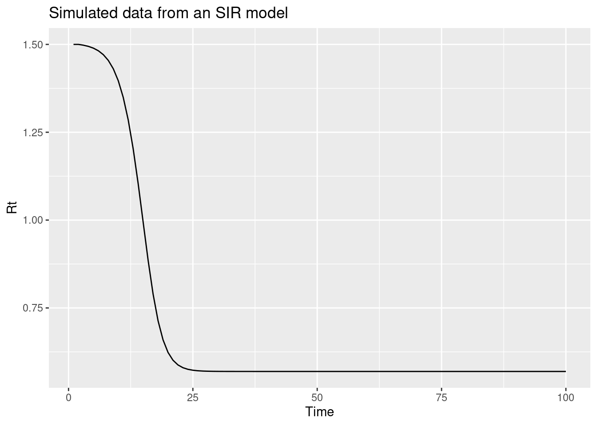
The key assumptions we are making here are:
We’ve coded this up as a stan model in stan/mechanistic-r.stan. See stan/functions/pop_bounded_renewal.stan for the function which calculates the reproduction number. Let’s load the model:
1: functions {
2: #include "functions/convolve_with_delay.stan"
3: #include "functions/pop_bounded_renewal.stan"
4: }
5:
6: data {
7: int n; // number of days
8: int I0; // number initially infected
9: array[n] int obs; // observed symptom onsets
10: int gen_time_max; // maximum generation time
11: array[gen_time_max] real gen_time_pmf; // pmf of generation time distribution
12: int<lower = 1> ip_max; // max incubation period
13: array[ip_max + 1] real ip_pmf;
14: int h; // number of days to forecast
15: array[2] real N_prior; // prior for total population
16: }
17:
18: transformed data {
19: int m = n + h;
20: }
21:
22: parameters {
23: real<lower = 0> R; // initial reproduction number
24: real<lower = 0> N; // total population
25: }
26:
27: transformed parameters {
28: array[m] real infections = pop_bounded_renewal(I0, R, gen_time_pmf, N, m);
29: array[m] real onsets = convolve_with_delay(infections, ip_pmf);
30: }
31:
32: model {
33: // priors
34: R ~ normal(1, 0.5) T[0,];
35: N ~ normal(N_prior[1], N_prior[2]) T[0,];
36: obs ~ poisson(onsets[1:n]);
37: }
38:
39: generated quantities {
40: array[h] real forecast;
41: if (h > 0) {
42: for (i in 1:h) {
43: forecast[i] = poisson_rng(onsets[n + i]);
44: }
45: }
46: }Adding more mechanistic structure is not always possible and, if we don’t specify mechanisms correctly, might make forecasts worse. Rather than adding more mechanistic structure to the renewal model, we could add more statistical structure with the aim of improving performance. Before we do this, we need to think about what we want from a forecasting model. As we identified above, we want a model which is unbiased and which has good short-term forecasting properties. We know that we want it to be able to adapt to trends in the reproduction number and that we want it to be able to capture the noise in the data. A statistical term that can be used to describe capturing a trend is saying that the time series is non-stationary. More specifically, a stationary time series is defined as one that does not have a trend over time. In infectious disease epidemiology, this would only be expected for endemic diseases without external seasonal influence.
The random walk model we used in the forecasting concept session is a special case of a more general class of models called autoregressive (AR) models. AR models are a class of models which predict the next value in a time series as a linear combination of the previous values in the time series. The random walk model is specifically a special case of an AR(1) model where the next value in the time series is predicted as the previous value, multiplied by a value between 1 and -1 , plus some noise. For the log-transformed reproduction number (\(log(R_t)\)), the model is:
\[ log(R_t) = \phi log(R_{t-1}) + \epsilon_t \]
where \(\epsilon_t\) is a normally distributed error term with mean 0 and standard deviation \(\sigma\) and \(\phi\) is a parameter between -1 and 1. If we restrict \(\phi\) to be between 0 and 1, we get a model which is biased towards a reproduction number of 1 but which can still capture trends in the data that decay over time.
n <- 100
phi <- 0.4
sigma <- 0.1
log_R <- rep(NA, n)
log_R[1] <- rnorm(1, 0, sigma)
for (i in 2:n) {
log_R[i] <- phi * log_R[i-1] + rnorm(1, 0, sigma)
}
data <- tibble(t = 1:n, R = exp(log_R))
ggplot(data, aes(x = t, y = R)) +
geom_line() +
labs(title = "Simulated data from an exponentiated AR(1) model",
x = "Time",
y = "R")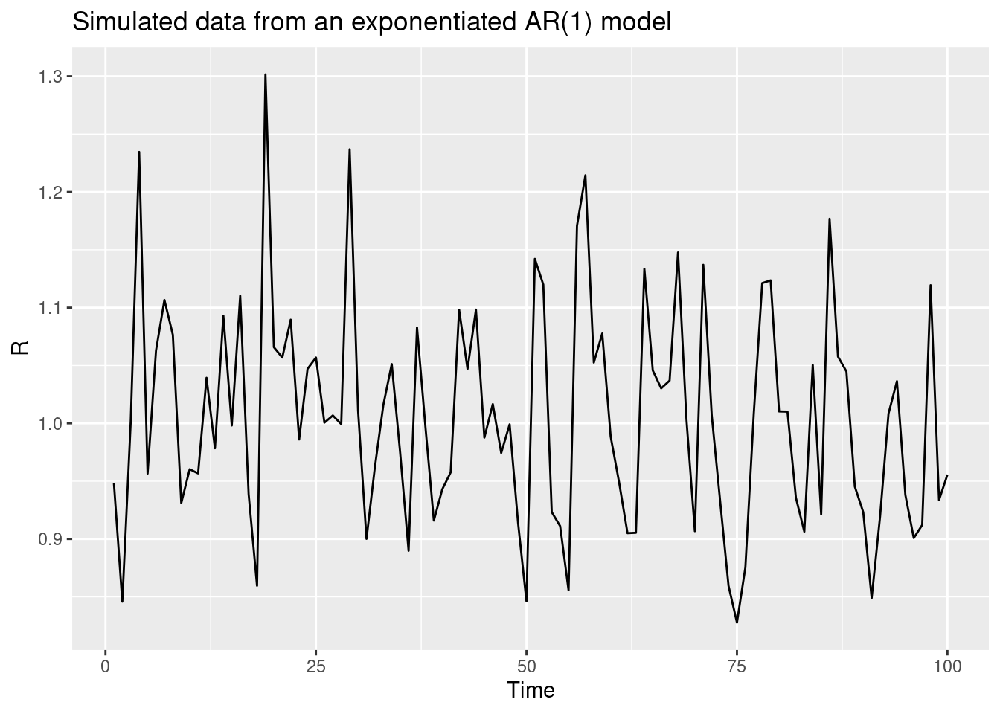
However, we probably don’t want a model which is biased towards a reproduction number of 1 (unless we have good reason to believe that is the expected behaviour). So what should we do?
Returning to the idea that the reproduction number is a non-stationary time series, as we have a trend in the reproduction number we want to capture, we can use a method from the field of time series analysis called differencing to make the time series stationary. This involves taking the difference between consecutive values in the time series. For the log-transformed reproduction number, this would be:
\[ log(R_t) - log(R_{t-1}) = \phi (log(R_{t-1}) - log(R_{t-2})) + \epsilon_t \]
Again we look at an R function that implements this model:
function (init, noise, std, damp)
{
n <- length(noise) + 1
x <- numeric(n)
x[1] <- init
x[2] <- x[1] + noise[1] * std
for (i in 3:n) {
x[i] <- x[i - 1] + damp * (x[i - 1] - x[i - 2]) + noise[i -
1] * std
}
return(exp(x))
}We can use this function to simulate a differenced random walk:
We’ve coded up a model that uses this random walk as a stan model in stan/statistical-r.stan. See stan/functions/geometic_diff_ar.stan for the function which calculates the reproduction number. Lets load the model:
1: functions {
2: #include "functions/convolve_with_delay.stan"
3: #include "functions/renewal.stan"
4: #include "functions/geometric_diff_ar.stan"
5: }
6:
7: data {
8: int n; // number of days
9: int I0; // number initially infected
10: array[n] int obs; // observed symptom onsets
11: int gen_time_max; // maximum generation time
12: array[gen_time_max] real gen_time_pmf; // pmf of generation time distribution
13: int<lower = 1> ip_max; // max incubation period
14: array[ip_max + 1] real ip_pmf;
15: int h; // number of days to forecast
16: }
17:
18: transformed data {
19: int m = n + h;
20: }
21:
22: parameters {
23: real init_R; // initial reproduction number
24: array[m-1] real rw_noise; // random walk noise
25: real<lower = 0> rw_sd; // random walk standard deviation
26: real<lower = 0, upper = 1> damp; // damping
27: }
28:
29: transformed parameters {
30: array[m] real R = geometric_diff_ar(init_R, rw_noise, rw_sd, damp);
31: array[m] real <upper = 1e5> infections = renewal(I0, R, gen_time_pmf);
32: array[m] real onsets = convolve_with_delay(infections, ip_pmf);
33: }
34:
35: model {
36: // priors
37: init_R ~ normal(-.1, 0.5); // Approximately Normal(1, 0.5)
38: rw_noise ~ std_normal();
39: rw_sd ~ normal(0, 0.01) T[0,];
40: damp ~ normal(0.9, 0.2) T[0, 1];
41: obs ~ poisson(onsets[1:n]);
42: }
43:
44: generated quantities {
45: array[h] real forecast;
46: if (h > 0) {
47: for (i in 1:h) {
48: forecast[i] = poisson_rng(onsets[n + i]);
49: }
50: }
51: }We will now use the mechanistic and statistical models to forecast the number of cases in the future using data simulated in the same way as we did in the forecasting concepts session. We will first load in the data and filter for a target forecast date.
# A tibble: 142 × 3
day onsets infections
<dbl> <int> <int>
1 1 0 0
2 2 0 1
3 3 0 0
4 4 0 2
5 5 0 1
6 6 0 1
7 7 0 1
8 8 0 3
9 9 0 0
10 10 1 0
# ℹ 132 more rowsWe will now fit the more mechanistic model to the data.
horizon <- 28
data <- list(
n =nrow(filtered_onset_df),
I0 = 1,
obs = filtered_onset_df$onsets,
gen_time_max = length(gen_time_pmf),
gen_time_pmf = gen_time_pmf,
ip_max = length(ip_pmf) - 1,
ip_pmf = ip_pmf,
h = horizon, # Here we set the number of days to forecast into the future
N_prior = c(10000, 2000) # the prior for the population size
)
mech_forecast_fit <- mech_mod$sample(
data = data, parallel_chains = 4
) variable mean median sd mad q5 q95 rhat ess_bulk
lp__ 31.87 32.19 1.04 0.74 29.73 32.84 1.00 1488
R 1.44 1.44 0.02 0.02 1.41 1.47 1.00 2524
N 9928.07 9938.50 1992.12 1887.27 6624.34 13260.36 1.00 2713
infections[1] 0.10 0.10 0.00 0.00 0.09 0.10 1.00 2526
infections[2] 0.26 0.26 0.00 0.00 0.25 0.27 1.00 2526
infections[3] 0.36 0.36 0.01 0.01 0.35 0.37 1.00 2525
infections[4] 0.41 0.41 0.01 0.01 0.40 0.42 1.00 2526
infections[5] 0.44 0.44 0.01 0.01 0.43 0.46 1.00 2525
infections[6] 0.48 0.48 0.01 0.01 0.46 0.50 1.00 2525
infections[7] 0.53 0.53 0.01 0.01 0.51 0.56 1.00 2525
ess_tail
2092
2251
1586
2251
2251
2251
2251
2251
2251
2251
# showing 10 of 169 rows (change via 'max_rows' argument or 'cmdstanr_max_rows' option)We will now fit the more statistical model to the data.
data <- list(
n =nrow(filtered_onset_df),
I0 = 1,
obs = filtered_onset_df$onsets,
gen_time_max = length(gen_time_pmf),
gen_time_pmf = gen_time_pmf,
ip_max = length(ip_pmf) - 1,
ip_pmf = ip_pmf,
h = horizon # Here we set the number of days to forecast into the future
)
stat_forecast_fit <- stat_mod$sample(
data = data, parallel_chains = 4,
init = \() list(init_R = 0, rw_sd = 0.01) # again set the initial values to make fitting more numerically stable
)Finally we can extract the forecasts from the models and plot them.
mech_forecast <- mech_forecast_fit |>
gather_draws(forecast[day]) |>
ungroup() |>
mutate(day = day + cutoff)
stat_forecast <- stat_forecast_fit |>
gather_draws(forecast[day]) |>
ungroup() |>
mutate(day = day + cutoff)
forecast <- bind_rows(
mutate(mech_forecast, model = "more mechanistic"),
mutate(stat_forecast, model = "more statistical")
) |>
ungroup()
target_onsets <- onset_df |>
filter(day > cutoff) |>
filter(day <= cutoff + horizon)forecast |>
filter(.draw %in% sample(.draw, 100)) |>
ggplot(aes(x = day)) +
geom_line(alpha = 0.1, aes(y = .value, group = interaction(.draw, model), colour = model)) +
geom_point(data = target_onsets, aes(x = day, y = onsets), color = "black") +
scale_y_log10() +
guides(colour = guide_legend(override.aes = list(alpha = 1)))Warning in scale_y_log10(): log-10 transformation introduced infinite values.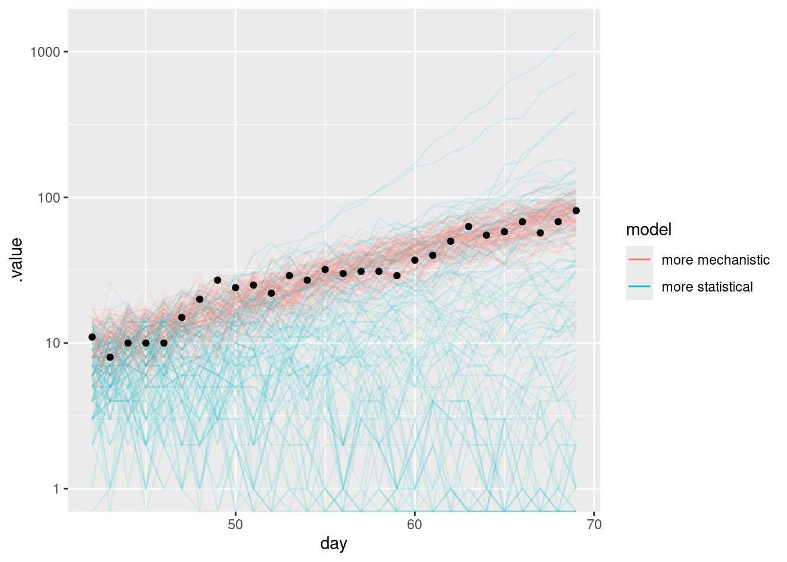
What do you notice about the forecasts from the more mechanistic and more statistical models?
As these models are still renewal processes we can still plot the time-varying reproduction number which can be a helpful way of reasoning about how the models are performing.
In the above we assumed that we knew the population size roughly. In practice, we may not. Refit the more mechanistic model with different priors for the population size and see how the forecasts change.
data <- list(
n = nrow(filtered_onset_df),
I0 = 1,
obs = filtered_onset_df$onsets,
gen_time_max = length(gen_time_pmf),
gen_time_pmf = gen_time_pmf,
ip_max = length(ip_pmf) - 1,
ip_pmf = ip_pmf,
h = horizon, # Here we set the number of days to forecast into the future
N_prior = c(100, 20) # the prior for the population size
)
mech_forecast_fit_diff <- mech_mod$sample(
data = data, parallel_chains = 4
)
mech_forecast_diff <- mech_forecast_fit_diff |>
gather_draws(forecast[day]) |>
ungroup() |>
mutate(day = day + cutoff)As in the forecasting concepts session, we have fit these models to a range of forecast dates so you don’t have to wait for the models to fit. We will now evaluate the forecasts from the mechanistic and statistical models.
We generated these forecasts using the code in data-raw/generate-example-forecasts.r which uses the same approach we just took for a single forecast date but generalises it to many forecast dates.
Some important things to note about these forecasts:
forecasts |>
filter(.draw %in% sample(.draw, 100)) |>
ggplot(aes(x = day)) +
geom_line(aes(y = .value, group = interaction(.draw, target_day), col = target_day), alpha = 0.1) +
geom_point(data = onset_df |>
filter(day >= 21),
aes(x = day, y = onsets), color = "black") +
scale_color_binned(type = "viridis") +
facet_wrap(~model) +
lims(y = c(0, 500))Warning: Removed 8 rows containing missing values or values outside the scale range
(`geom_line()`).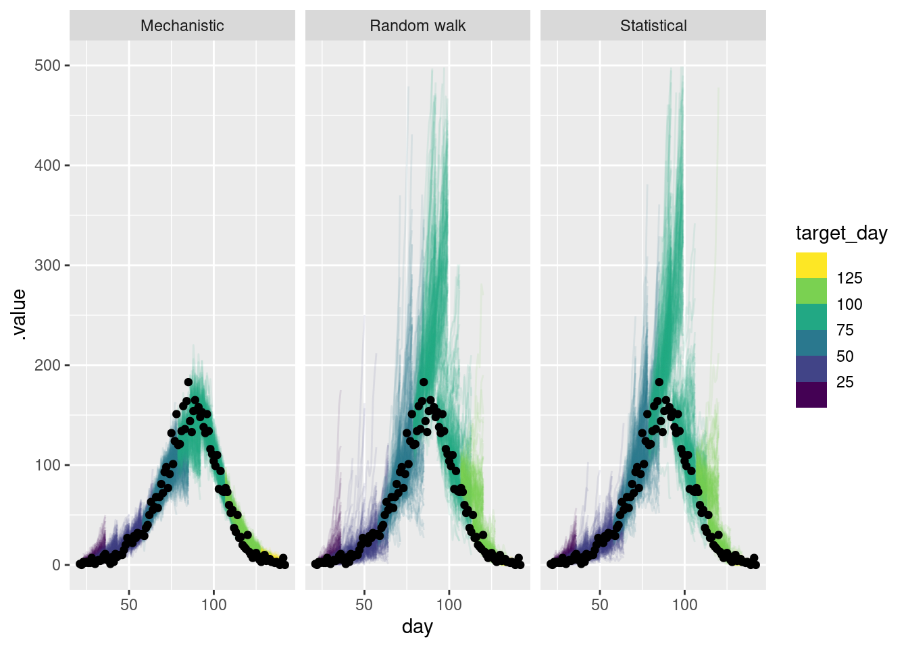
As for the single forecast it is helpful to also plot the forecast on the log scale.
forecasts |>
filter(.draw %in% sample(.draw, 100)) |>
ggplot(aes(x = day)) +
geom_line(aes(y = .value, group = interaction(.draw, target_day), col = target_day), alpha = 0.1) +
geom_point(data = onset_df, aes(x = day, y = onsets), color = "black") +
scale_y_log10(limits = c(NA, 500)) +
scale_color_binned(type = "viridis") +
facet_wrap(~model)Warning in scale_y_log10(limits = c(NA, 500)): log-10 transformation introduced infinite values.
log-10 transformation introduced infinite values.Warning: Removed 13 rows containing missing values or values outside the scale range
(`geom_line()`).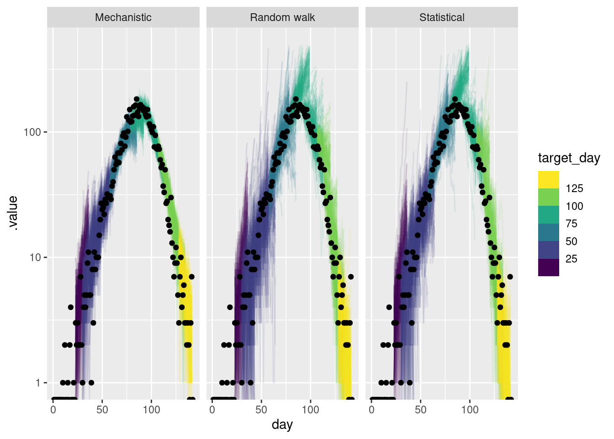
How do these forecasts compare? Which do you prefer?
How do these forecasts compare?
Which do you prefer?
sc_forecasts <- forecasts |>
left_join(onset_df, by = "day") |>
filter(!is.na(.value)) |>
as_forecast(
forecast_unit = c("target_day", "horizon", "model"),
forecast_type = "sample",
observed = "onsets",
predicted = ".value",
model = "model",
sample_id = ".draw"
)
sc_forecastsForecast type: sampleForecast unit:target_day, horizon, and model
sample_id predicted observed target_day horizon model
<int> <num> <int> <num> <int> <char>
1: 1 4 3 22 1 Random walk
2: 2 2 3 22 1 Random walk
3: 3 2 3 22 1 Random walk
4: 4 6 3 22 1 Random walk
5: 5 2 3 22 1 Random walk
---
671996: 996 1 7 127 14 Mechanistic
671997: 997 7 7 127 14 Mechanistic
671998: 998 2 7 127 14 Mechanistic
671999: 999 1 7 127 14 Mechanistic
672000: 1000 5 7 127 14 MechanisticEverything seems to be in order. We can now use the scoringutils package to calculate some metrics as we did in the forecasting concepts session.
target_day horizon model bias dss crps log_score mad
<num> <int> <char> <num> <num> <num> <num> <num>
1: 22 1 Random walk 0.043 1.540881 0.469424 1.655610 1.4826
2: 22 2 Random walk 0.556 2.391756 0.950522 1.851434 2.9652
3: 22 3 Random walk 0.328 2.194804 0.738624 1.842254 2.9652
4: 22 4 Random walk 0.687 3.231981 1.570469 2.175798 2.9652
5: 22 5 Random walk 0.767 3.750147 2.172579 2.489797 2.9652
---
668: 127 10 Mechanistic 0.509 2.013433 0.809048 1.802981 1.4826
669: 127 11 Mechanistic 0.680 2.464343 1.158455 1.845716 1.4826
670: 127 12 Mechanistic 0.974 4.875547 2.604446 3.415057 1.4826
671: 127 13 Mechanistic 0.084 1.249373 0.408800 1.462535 1.4826
672: 127 14 Mechanistic -0.956 6.383069 3.065386 3.692003 1.4826
ae_median se_mean
<num> <num>
1: 0 0.155236
2: 2 3.655744
3: 1 1.898884
4: 3 9.284209
5: 3 15.327225
---
668: 1 2.292196
669: 2 4.313929
670: 3 13.704804
671: 0 0.119716
672: 4 15.904144Let’s summarise the scores by model first.
model bias dss crps log_score mad ae_median
<char> <num> <num> <num> <num> <num> <num>
1: Random walk 0.2602411 6.387998 13.804122 3.980707 18.251203 18.522321
2: Statistical 0.3075893 6.247106 13.833699 3.983604 16.364859 18.415179
3: Mechanistic 0.2600536 5.615946 6.490944 3.705884 8.511712 9.035714
se_mean
<num>
1: 1578.2811
2: 1504.3416
3: 196.7022Before we look in detail at the scores, what do you think the scores are telling you? Which model do you think is best?
As in the forecasting concepts session, we will start by looking at the CRPS by horizon and forecast date.
First by forecast horizon.
sc_scores |>
summarise_scores(by = c("model", "horizon")) |>
ggplot(aes(x = horizon, y = crps, col = model)) +
geom_point()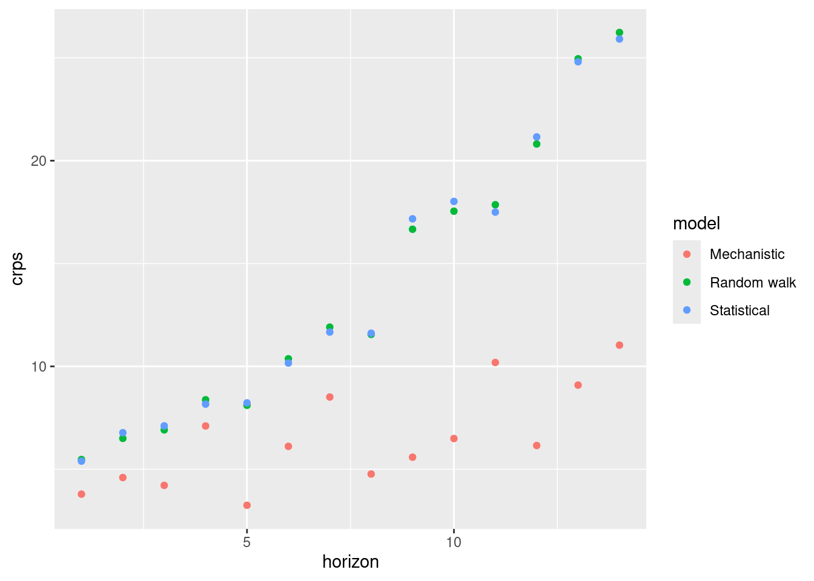
and across different forecast dates
sc_scores |>
summarise_scores(by = c("target_day", "model")) |>
ggplot(aes(x = target_day, y = crps, col = model)) +
geom_point()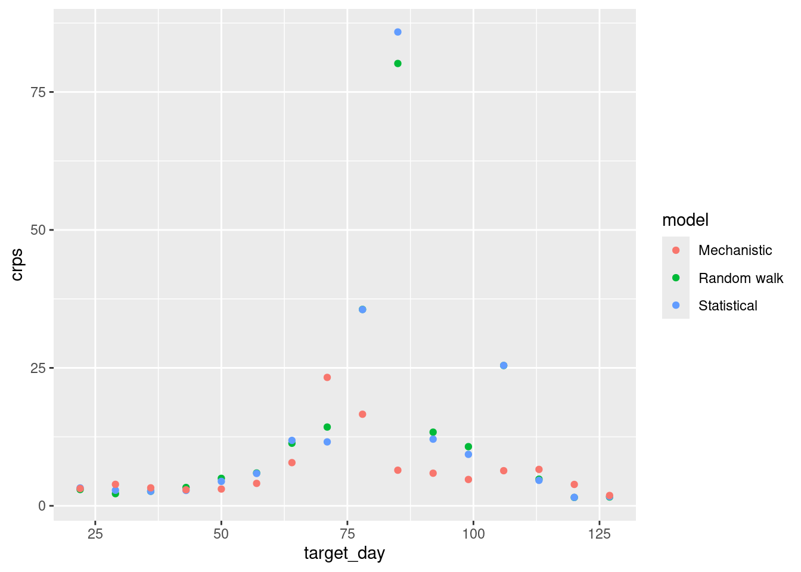
How do the CRPS scores change based on forecast date? How do the CRPS scores change with forecast horizon?
How do the CRPS scores change based on forecast horizon?
How do the CRPS scores change with forecast date?
Let’s first look at the overall PIT histogram.
As before let’s look at the PIT histogram by forecast horizon (to save space we will group horizons)
sc_forecasts |>
mutate(group_horizon = case_when(
horizon <= 3 ~ "1-3",
horizon <= 7 ~ "4-7",
horizon <= 14 ~ "8-14"
)) |>
get_pit(by = c("model", "group_horizon")) |>
plot_pit() +
facet_grid(vars(model), vars(group_horizon))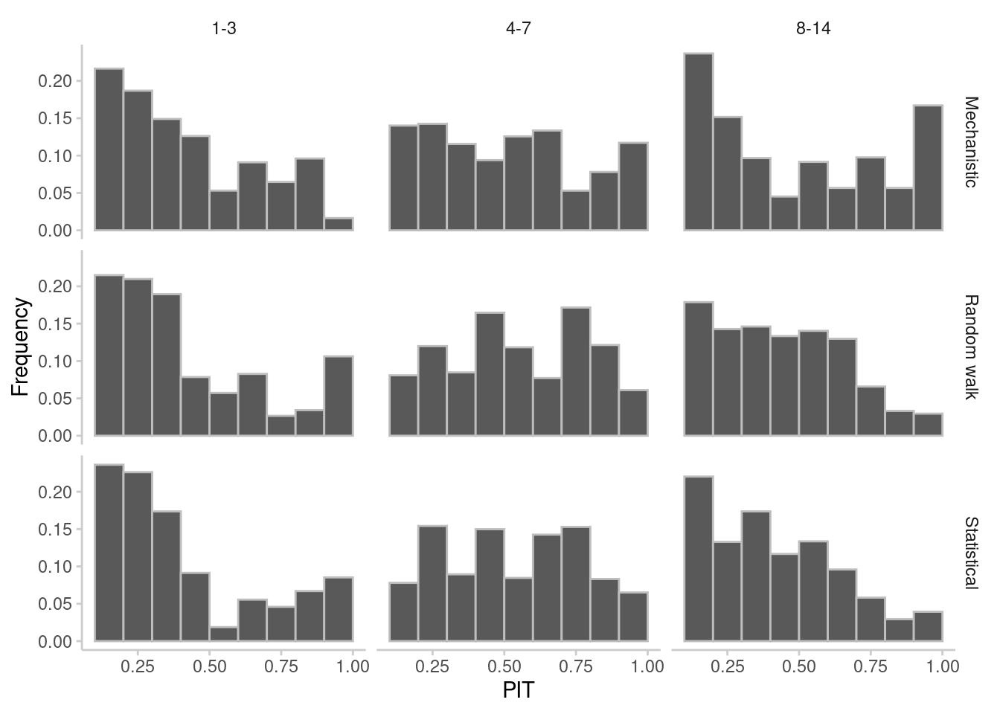
and then for different forecast dates.
sc_forecasts |>
get_pit(by = c("model", "target_day")) |>
plot_pit() +
facet_grid(vars(model), vars(target_day))Warning: Removed 18 rows containing missing values or values outside the scale range
(`geom_bar()`).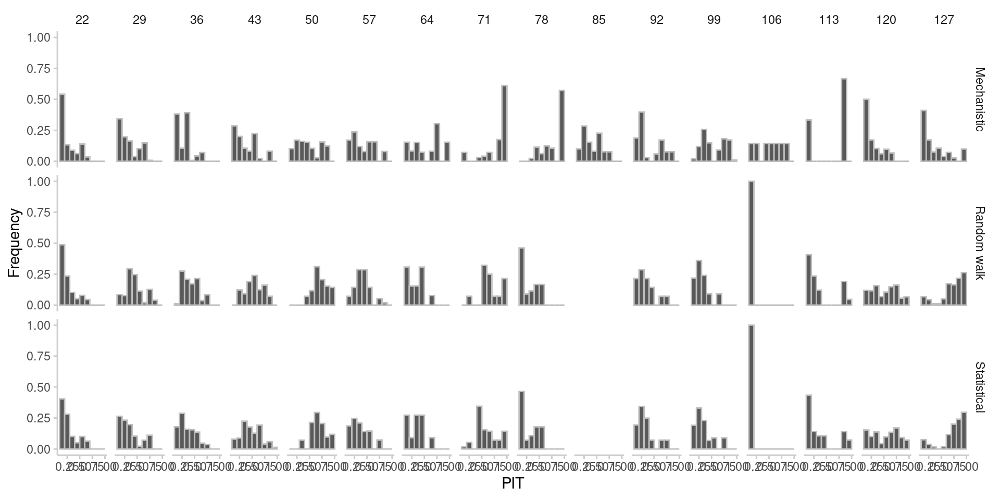
What do you think of the PIT histograms?
What do you think of the PIT histograms?
Again as in the forecasting concepts session, we will also score the forecasts on the log scale.
Reminder: For more on scoring on the log scale see Scoring forecasts on transformed scales.
model bias dss crps log_score mad ae_median
<char> <num> <num> <num> <num> <num> <num>
1: Random walk 0.2202500 -0.5437929 0.2430521 0.5758656 0.3761217 0.3308532
2: Statistical 0.2669464 -0.3897250 0.2464576 0.5991320 0.3302442 0.3410720
3: Mechanistic 0.2189554 -1.0162121 0.2116730 0.2931774 0.2182572 0.2914358
se_mean
<num>
1: 0.2015962
2: 0.2116263
3: 0.1764724Before we look in detail at the scores, what do you think the scores are telling you? Which model do you think is best?
log_sc_scores |>
summarise_scores(by = c("model", "horizon")) |>
ggplot(aes(x = horizon, y = crps, col = model)) +
geom_point()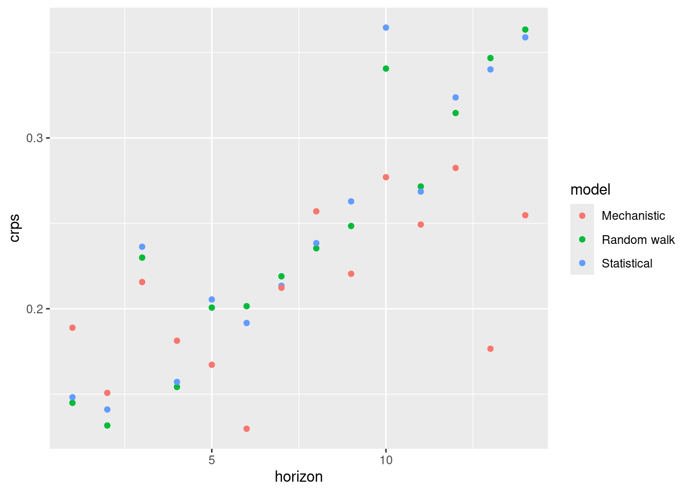
log_sc_scores |>
summarise_scores(by = c("target_day", "model")) |>
ggplot(aes(x = target_day, y = crps, col = model)) +
geom_point()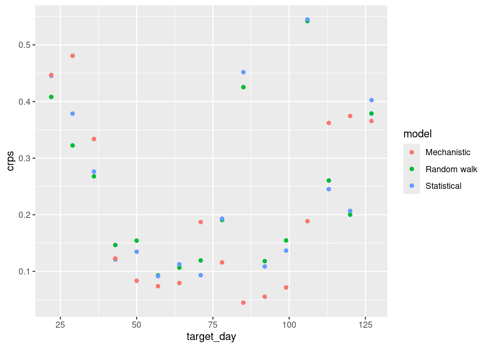
How do the CRPS scores on the log scale compare to the scores on the original scale?
log_sc_forecasts |>
mutate(group_horizon = case_when(
horizon <= 3 ~ "1-3",
horizon <= 7 ~ "4-7",
horizon <= 14 ~ "8-14"
)) |>
get_pit(by = c("model", "group_horizon")) |>
plot_pit() +
facet_grid(vars(model), vars(group_horizon))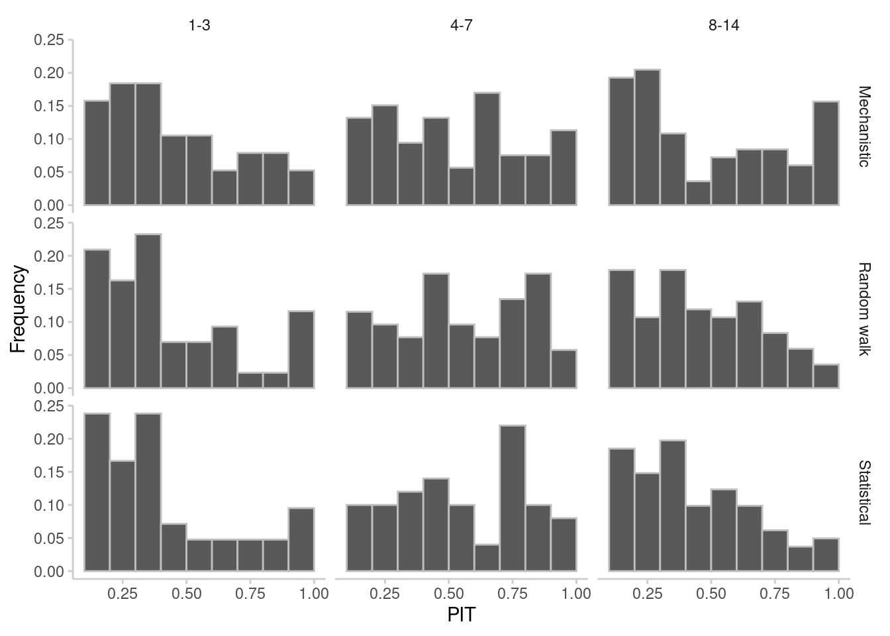
log_sc_forecasts |>
get_pit(by = c("model", "target_day")) |>
plot_pit() +
facet_grid(vars(model), vars(target_day))Warning: Removed 18 rows containing missing values or values outside the scale range
(`geom_bar()`).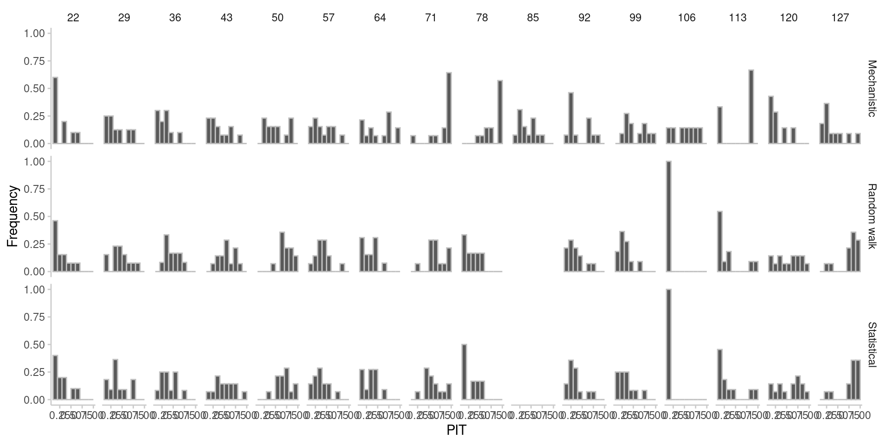
What do you think of the PIT histograms?
What do you think of the PIT histograms? - The PIT histograms are similar to the original scale PIT histograms.